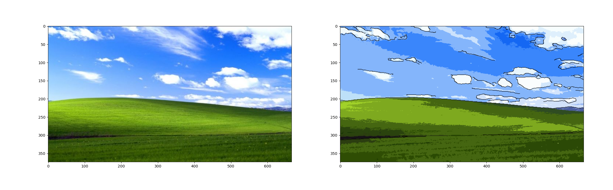

Cartoonify
Joseph Lee, Kelsey Henson, Lydon Puzon, Roger Nhan, Sabrina Chua
Fall 2020 CS 4476 Computer Vision: Class Project
Georgia Tech
Please see this for an example of how to lay out the various details of your project. You may need to provide more details than this, beause you will not be submitting an associated paper to accompany the webpage. So the page should be self-contained
Project proposal
Click hereAbstract
The goal of this project is to stylize an inputted image to appear like a cartoon image. To accomplish this, we will detect the prominent shapes within the image and add an outline to them, as well as normalize the color groups of the image, narrowing each object to a pallet of a predetermined amount of colors. Additionally, we will apply minimal edge outlines within the image to make the primary textures more prominent.Teaser figure

Introduction
Motivation behind the problem you are solving, what applications it has, any brief background on the particular domain you are working in (if not regular RBG photographs), etc. If you are using a new way to solve an existing problem, briefly mention and describe the existing approaches and tell us how your approach is new.Approach
Normalizing Colors
Our approach for altering the colors will include normalizing the color pallet using hue saturation and grouping shade colors together. To normalize the pallet, we will choose a predefined set of colors that generalizes only a few colors to each object. This choice will be made using hue saturation techniques. We will then group together these colors by the objects they belong to in order to reduce the amount of color variation across the image.Reinforcing Outlines
In order to create a hard outline of objects within the object, such as in a cartoon styled image, we will smooth and reinforce the outlines of objects within the images. We will smooth the outlines to be straighter and more defined to reduce excessive corners and line complexity. The techniques used in this will be Canny Edge Detection to first find the object lines and thresholding to detect and increase the thresholds of the images to a larger pixel value.Smooth Textures
To recreate the textures of a cartoon, we will detect highly textured areas within the images and either replace those selected texture patterns with a reduced image bank of smoother textures or apply a median filter to blur the image slightly to reduce the textures. Our team will decide on the final technique utilized here through experimentation on the image to test for best results.Experiments and results
Edge Detection and outlining
For the automatic edge detection, we used a canny edge detector. We experimented with different sigmas, low thresholds, and high thresholds to find the optimal setting for our needs. To accomplish this, we would take a sample image and plot a 5x5 grid of images, varying the low threshold on the y-axis and the high threshold on the x-axis. We would then run this test for varying sigma values and ultimately decide which configuration gave the best qualitative results. After finding these values, we run the canny edge detection on a gray-scale version of the input image and overlay the resulting edges as a black outline on the image. To better approximate how this would be used in the finished project, we also would first quantize the image before performing these steps. Additional experimentation performed was processing the edge detection on the original image, or a higher bin count quantizated version of the image (k=32), and then overlay those edges on a lower bin count quantized version (k=8). This served the give more outlining detail in the image than is apparent from just the colors, and gave a better sense of texture in the resulting image.Smooth Textures
For smoothing textures, we initially experimented with various filters including the median, gaussian, and laplace filter. We ran these tests against our compiled 10 images to experiment with initially and visually checked for the desired results. For filters such as the gaussian, it resulted in too blurry of a result; therefore, we decided against using those. When trying other filters, we also ran into an issue where the filters would discolor the image when the size was set too high and depending on the contrast of the image, the filter size needed to be adjusted.

Qualitative results

Result for hill image
Result for jogging image
Result for Beatles image

Result for person image